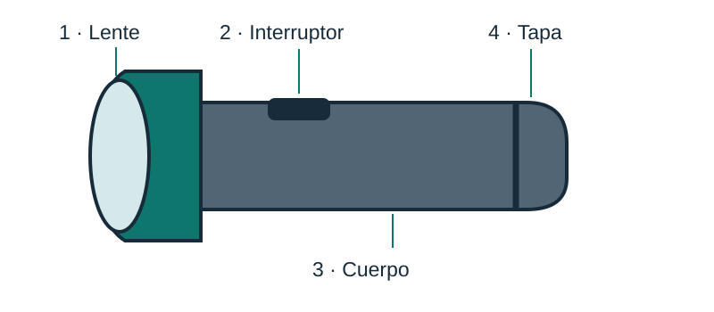

Manual de una linterna portátil
Guía para reconocer sus partes y orientar a una persona que la utiliza por primera vez.
¿Para qué sirve?
Una linterna portátil permite iluminar una zona sin depender de una conexión a la red. Este ejemplo supone una linterna sencilla con interruptor de encendido y apagado.

Plano de identificación
- Lente: permite la salida de la luz.
- Interruptor: permite encender y apagar.
- Cuerpo: contiene los componentes y permite sujetar la linterna.
- Tapa posterior: cierra el compartimento de la fuente de alimentación.
Texto e ilustración originales de Estudia CEST. Esquema simplificado sin escala. En un equipo real, consulta el manual de su modelo.
Uso y cuidado
Indicaciones
- Revisa que la carcasa y el interruptor no presenten daños visibles.
- Sujeta la linterna por el cuerpo, señalado con el número 3.
- Presiona el interruptor, número 2, para encenderla y dirige la luz hacia la zona que necesitas observar.
- Apaga la linterna cuando termines y guárdala en un lugar seco.
Advertencia
No apuntes la luz directamente a los ojos. No supongas que el equipo resiste el agua: compruébalo en el manual de su modelo.
Cuidado
Conserva la carcasa limpia y seca. No abras ni repares componentes que no conozcas.
Cuándo pedir asistencia
Si observas daños, calentamiento anormal o deterioro en la fuente de alimentación, deja de utilizarla y consulta a la persona responsable.
Modelo didáctico original: Estudia CEST. Su propósito es mostrar la estructura del género, no sustituir instrucciones del fabricante.